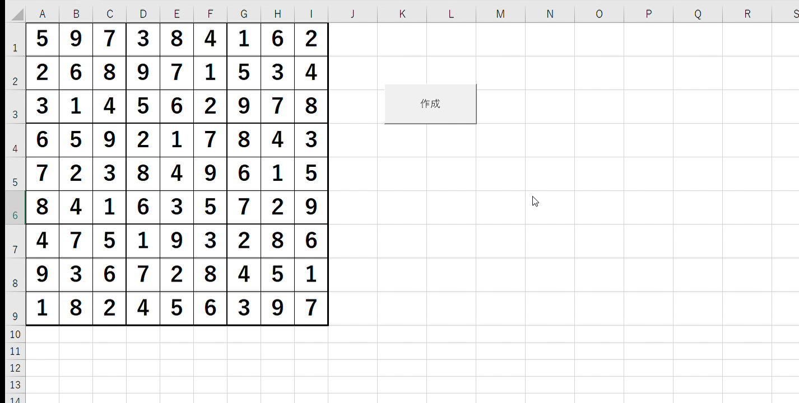

数独解答盤面作成
Excelマクロ
更新履歴
- 2020/04/27 公開
- 2020/04/28 作成経緯を追加
- 2020/07/25 レイアウト変更
イメージ

これはなに？
数独の解答盤面を作ってくれるExcelマクロです。問題盤面ではありません。作成経緯にある通り、作問の手間を省くためのマクロです。作成経緯
数独を作ろうと思ったとき、最初に完成図を作ります。作成には手間がかかるので、という経緯で作成しました。問題を作成するマクロは多く存在しますが、完成図だけを作るマクロは見たことありません。
数字をくりぬいていく楽しさと面白さをなくさないよう、面倒な作業のみを実行できます。